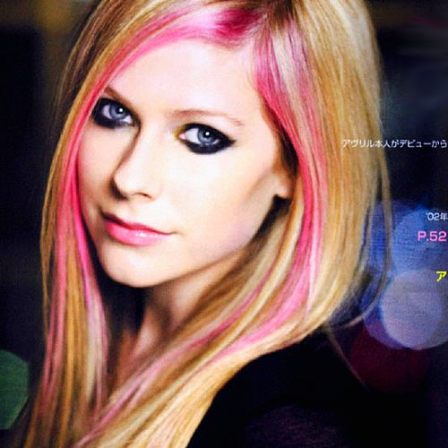
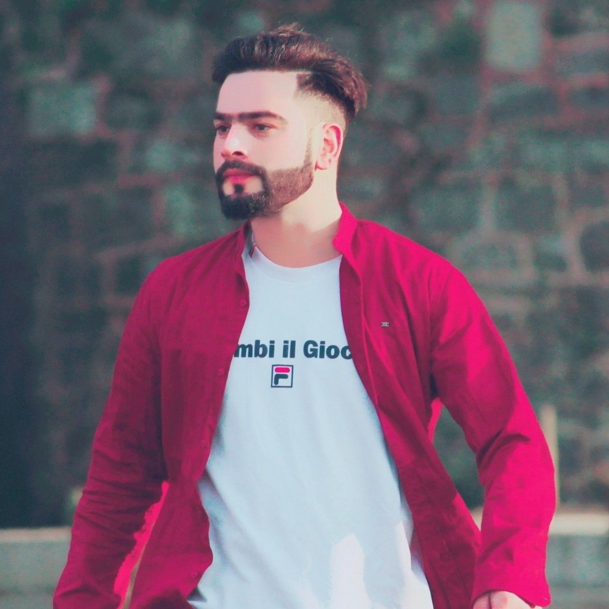

Dealing with
- Stress
- Anexiety
- Loneliness
- Distractions
Sudden outbreak of the global pandemic COVID-19 had put a question mark on all of our lives.
Every individual on this planet had to cope up with a new challenge everyday in their lives to
survive during those days. COVID era was a tough time for all of us and this has still not come
to an end till now. Taking care of the mental health was a major challenge. It was a must to
take care of the mental health and work upon it. We were all forced to manage our mental health.
No worries!! now this platform is here which will help you to manage
your lives during the tough times. Here, you'll find Solutions to all your mental and emotional
complications along with some real time inspiring stories that will inspire you to cope up with
your problems and visualise life from a different prospect. So, lets dive in to the pool of peace..!!
Factors Affecting the Mental Health
There were many factors that adversely affected the mental health of individuals. Some of the
major factors along with their impacts are listed below.
Unemployment
COVID-19 was a major cause that cause many local shops and businesses to close that
had provided jobs to thousands of people. Thus, unemployment led to poverty and lack of basic
resources to the people. People got stuck in homes being helpless.
Stress and Anexiety
Losing special ones, lack of money, getting stuck in other places and being unavailalble for
the family were major causes of stress for the people. Social distancing was also a reason that
kept people away from friends and family making them anxious.

Loneliness
People felt prisoned inside their own houses due to lockdown. Many people
were surviving alone due to which feeling of loneliness was the most common.
This caused a gut feeling among people which was difficult to overcome.

Sleep Disturbances
People who were having WORK FROM HOME found it very difficult to manage. Employees in
different companies were forced to work in excess amount due to changing business world
that caused disturbances in sleep cycle.
Lack of motivation
Many people were stuck in different cities or even countries globally due to the worldwide
lockdown. People were away from their loved ones due to which they felt demotivated. This
led to many mental health issues.

Health issues
People who had symptoms of Coronavirus were very afraid and had to manage everything
by themselves. And looking at the increasing number of deaths and shortage of medical
resources, there was a feeing of threat among the people.
Some Real Life Inspiring Stories
"Lost both my lifelines to covid. Without Aai (mother) and Baba (father),
nothing will be the same. Everything fell apart in a month. My home, dreams, everything," said the
famous Indian youtuber Bhuwan Bam. He lost both of his parents due to COVID-19 during the lockdown in
the month of June 2021. He is only of 21. He is finding it really difficult to restatrt his life after
this sad incident. But even after this, he has been very strong and has said that, "Can't wait to see them again. I wish the day comes soon".
He has restarted his life and is performing really well again. He wishes to make his parents proud anywhere
they are. Losing parents in such a young age and restarting the life with same courage takes a lot.
Bhuwan has proven that anyone can cope out of difficult situations and restart their lives.
"I am sheltering in place alone, but not lonely. I miss my Mama. She passed on Friday, January 24, 2020,
after five weeks in the hospital. Besides being my mother, she was my housemate and best friend.
The eldest of her six children (two boys and four girls), I am her next of kin. I am the one
everyone looked to when it came to making decisions. I am the facilitator and advocate on behalf
of our family. Now, walking through the house we shared and where I grew up, her presence is all
around me. I hear her voice and see her everywhere. Mama left
many wonderful, sunshine memories. As I grieve her, I am sheltering in place alone, but not lonely."
said Rosa, a middle school girl from Michigian, USA. Rosa lost her mom at an early age of 15 due to the deadly Coronavirus. After demise of her mom,
she has cleared national level entrance for engineering and statred her life again.


"I am quarantined with a teenager. It is just she and I, the dogs, and the cat.
This teen is my daughter, my friend, my binge-watching TV companion, my work out buddy,
and my therapist.We don our masks and take long walks with the dogs, avoiding people as
we zigzag through the
neighborhood. I try to think of interesting things to talk about. We want to discuss the
future, but we cannot make plans; the future is unknown. She talks about her frustration
with online classes; I tell her what she should do, she seems annoyed. I complain about
my transition to online classes, she listens, I think she might be annoyed, she has
heard it all before. I comment on how crowded the streets and sidewalks are, she rolls her eyes. We take deep breaths until one of us changes the subject, and
then we are walking together again. We share how much we miss her dad." said Katherine Mark from Oakland, California, U.S.
"I was a gym trainer before COVID-19. I was really earning good.
I used to have about 8-10 sessions at different places each day. After outbreak of Coronavirus,
my gyms paid me for about 3 months but later on due to lack of funds, they also could not pay.
I was conducting my sessions in online mode, but I was unable to make money. As I was only one
earning member of my family, it was a real tough time to manage everything. In this time,
my mom suffered COVID-19. I sold my watches, gadgets and almost everything I had to
arrange money but she died to lack of medicines in later stages. This question will alwayds
remain in my heart if I was a good son. Now, I have responsibilities of my younger siblings and
I am giving my 100 percent for this." said Robin from Canada.